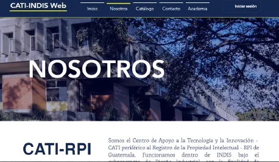
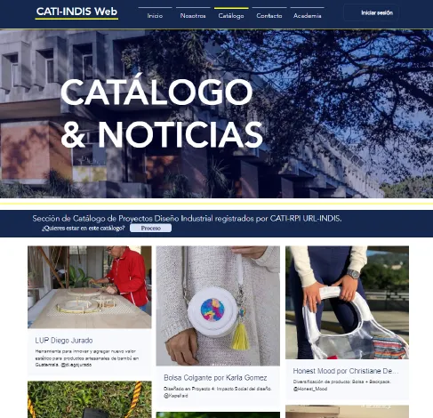

Identidad digital desde cero
Concepto, lanzamiento y gestión de la presencia en redes de GRUBORJA.
Developer · UX/UI
Diseñador Industrial y Técnico en Desarrollo de Software, con experiencia en diseño digital y desarrollo frontend. Combino sensibilidad por la experiencia de usuario con conocimientos técnicos para crear interfaces funcionales, accesibles y visualmente consistentes: entiendo el problema desde el diseño y lo llevo a una implementación técnica.
Actualmente fortalezco mi perfil frontend y avanzo hacia full-stack. Busco integrarme a un equipo donde pueda aportar desde la ejecución técnica y desde el diseño, construyendo productos digitales escalables y centrados en el usuario.
Creación y lanzamiento de la identidad digital desde cero, alineando la comunicación con la visión comercial del negocio. Supervisión del plan de contenidos y análisis de métricas para tomar decisiones basadas en datos.
Workshops de Design Thinking con Comercio Exterior y stakeholders para diagnosticar flujos (As-Is / To-Be) y diseñar la automatización del módulo de Cartas de Crédito. Arquitectura de información, prototipos de alta y baja fidelidad para cliente y back-office con firma electrónica, pruebas de usabilidad y handoff con ingeniería para reducir errores en producción.
Redacción estratégica y conceptualización de campañas digitales para mercados internacionales, incluyendo clientes en Asia.
Coordinación de entregables y cronogramas en proyectos de diseño corporativo y comerciales entre múltiples departamentos.
Plataforma virtual que integra CATI-RPI y URL-INDIS para optimizar el registro y la gestión de proyectos del programa de Diseño Industrial. Consolida una biblioteca de trabajos estudiantiles, fomenta la colaboración académica y busca elevar el índice de innovación en Guatemala conectando talento creativo con desarrollo tecnológico.



Concepto, lanzamiento y gestión de la presencia en redes de GRUBORJA.
Plan de contenidos y análisis de métricas de rendimiento para optimizar resultados.
Mensajes y campañas adaptados culturalmente para audiencias en Asia.
Formación intensiva presencial: 1600 horas de programación, 300 de inglés técnico y 300 de habilidades adaptativas.
Frontend y backend, CMS/e-commerce, algoritmos, lógica de programación y bases de datos.
Intercambio AUSJAL: Universidad Iberoamericana CDMX (2019) y Universidad Pontificia Bolivariana Medellín (2020).
O escríbeme directo a di.jdbo@gmail.com · LinkedIn · GitHub